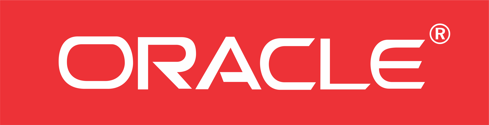
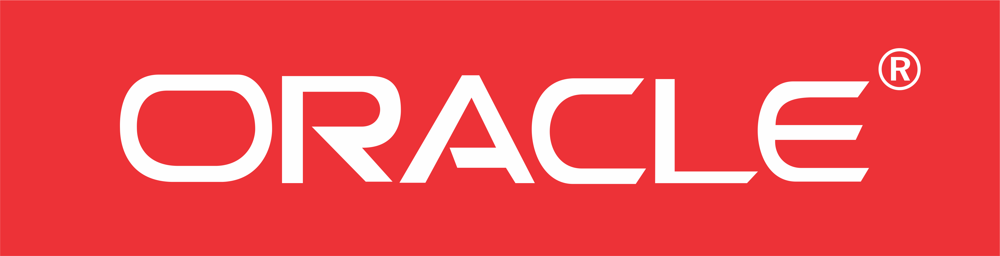

SMK Telkom Malang adalah pelopor Sekolah menengah kejuruan pertama di Indonesia di bidang Teknologi dan Informatika. Berpengalaman dari tahun 1992 yang telah terakreditasi "A" dan mempunyai standart mutu ISO 9001:2008.

Banyak kompetisi di bidang IT maupun non-IT yang banyak diraih oleh siswa-siswi SMK Telkom Malang. Segala prestasi tersebut sangat membanggakan sekolah dan dapat menjadi bekal untuk meraih masa depan yang gemilang.

SMK Telkom SP Malang pushed me to aim high, train me to become the truly of Engineer do. Meanwhile, gain my leadership skills and strenghen my long-term goal to become what I wanna be. 12 hours for progamming ourses every week took me to reach out my limit.


 
